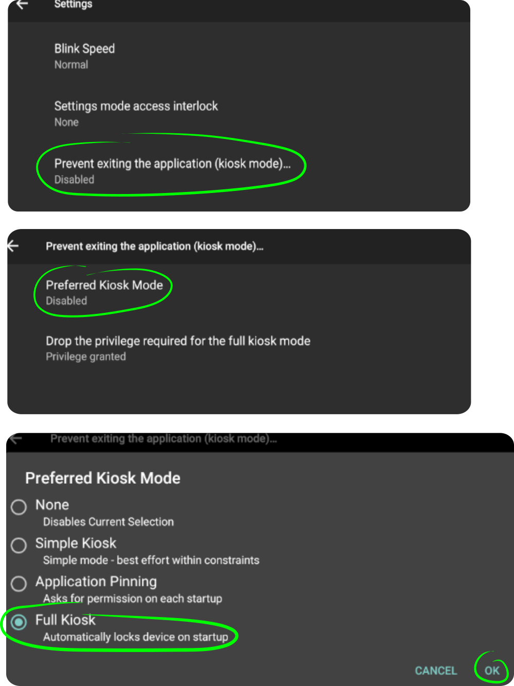

The criteria for selecting a Kiosk Mode are discussed in depth
here.
If you determine you need Full Kiosk Mode, proceed as described below.
Preparation
You will need:
A tablet or smartphone with Aesop Player already installed and
configured.
A PC or Mac computer with Internet access.
A USB cable to connect the Aesop Player device to your computer.
Your charging cable, if it unplugs from the transformer, is likely to suffice.
1. Remove all accounts
In order for step 4 to succeed, you need to remove all the accounts registered
in the system.
If you've recently done a Factory Reset or are using a brand new devoce,
and have not created any accounts, that's already done and you can skip to step 2.
Here's How
Go to Settings → Accounts and remove all
the accounts.
2. Enable USB debugging
You need to enable USB debugging on the device so that it accepts commands from
your computer.
Here's How
Go to Settings → About device and
tap on the Build number 7 times.
Go back, enter the newly added Developer options and
activate USB debugging.
You are a hacker now ;)
3. Install ADB
The adb command is needed on your computer to perform the next
step. The software installed here can be uninstalled later.
Copy and execute the following command to install the adb command:
brew cask install android-platform-tools
4. Make Aesop Player a privileged application
In order for Aesop Player to take full control of the UI it needs to be given
special privilege — it needs to be made a so-called device owner.
This doesn't change the software in any way, it does not
void the warranty and it can be easily reversed or temporarily suspended.
Here's How
Attach the device with a USB cable to your computer.
On your computer start a terminal (Linux/Mac) or the command prompt
(Windows).
Success: Device owner set to package com.donnKey.aesopPlayer
If Aesop was set to Application Pinning Kiosk Mode, it will be changed to None.
On recent (Android 9 and above) devices, if you go to Android Settings->Security&location->Device Admin Apps you'll find
a long and scary-sounding message about what Aesop Player could in theory do to the system.
The only actual privilege it uses is the one required to implement Full Kiosk Mode,
the BIND_DEVICE_ADMIN (also known as Device Owner) privilege.
The folks at Google want us to tell you we are using that privilege.
Error: Trying to set device owner but device is already provisioned.
This means that there are some accounts still configured on the device.
Make sure you have performed step "1. Remove all accounts" correctly.
Error: More than one device/emulator
You have more than one Android device (or emulator) plugged into your computer.
Type adb devices to see a list of the devices and emulators.
Use the -d (for devices) or -s (for emulators) option to adb to select one.
(adb -s emulator-5678 dpm... )
The adb operation did not make Full Kiosk Mode available.
We have occasionally and intermittently seen the adb command not fully enable the required permissions.
Simply repeat the command.
You will see an error about the permission already being used, but it should fix the problem.
5. Enable the full kiosk mode
Now you can enable and disable the full kiosk mode at will.
Here's How
Start Aesop Player.
Enter (Aesop) settings via the "gear" icon.
Click Prevent from exiting the application (kiosk mode).
Click Preferred Kiosk Mode.
Click the radio button for Full Kiosk (It will be enabled if you have done the above correctly.)
Go back to leave the settings screen.

Now it's impossible to leave the player application without going through Settings, which
should have one of the
Settings Interlock
modes set.
You can change the Kiosk Mode by selecting one of the other available types.
You can give up the permission completely by tapping
Drop the privilege required for the full kiosk mode;
you would need to repeat the step using adb above to
restore it.
Dropping the privilege while in Full Kiosk Mode will cause the Kiosk Mode to be changed to None.
If you want to temporarily leave
Full Kiosk mode to do other work on the device, put Aesop into
Maintenance Mode.